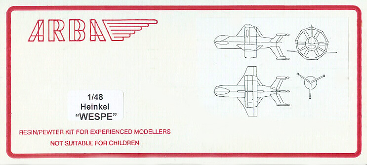
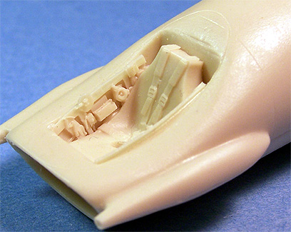
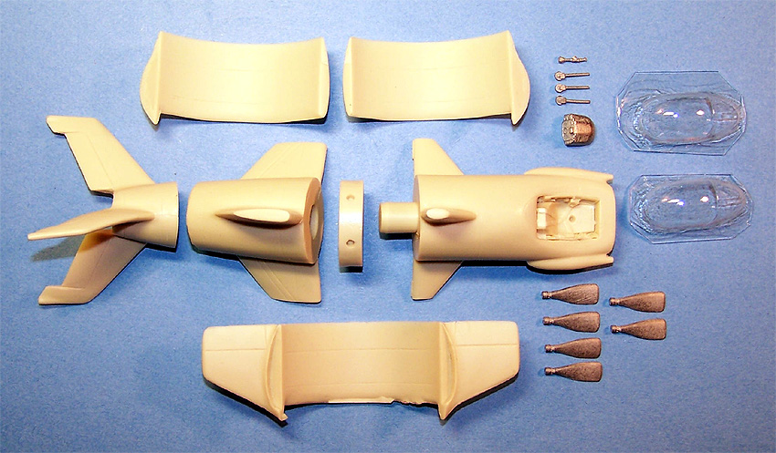

ARBA 1/48 Heinkel �Wespe�

Kit #48089
MSRP $74.41
Images and text Copyright � 2006 by Matt Swan
Developmental Background
By early 1944 Nazi Germany was starting to feel the sting of Allied bombing and began to look for the means to protect attractive targets like aircraft factories, ball bearing plants and fuel refineries. The objective was to provide a point defense craft that could be quickly launched without the benefit of an airfield, obtain an altitude comparable to that of invading aircraft rapidly, have sufficient firepower to eliminate the threat and return to staging point. Several ideas were advanced by most of the front line aircraft manufactures in Germany and as the situation became more desperate the ideas considered became more bizarre. The Heinkel Company initially proposed the �Wespe� as a point defense fighter.
The concept was based on a vertical take-off and landing aircraft powered by a single He S 021 turboprop engine. This engine was a development of the Henschel He S 011 turbojet engine, it drove a six blade propeller mounted in the center of the aircraft that would have provided about 2000 horsepower plus would have also produced 750 KP of thrust. As the Wespe was a relatively small aircraft this powerplant provided a very impressive power to weight ratio, unfortunately the fuel capacity forced it into a very short operational flight. Once it achieved an operational altitude she carried two Mk 108 30mm cannons mounted in cheek blisters. The pilot was seated in a conventional format cockpit mounted in the nose with a large bubble canopy that would have provided an excellent view.
The aircraft would have launched from a vertical position and this is where that huge power to weight ratio really comes into play, intercepted incoming bombers, do what damage it could then return to a landing site where it would (in theory) land in a vertical attitude. Even with the benefit of modern computers this would have been a very challenging proposition especially considering that the pilot was completely unable to see the landing site. The project never made it off the drawing boards and was ultimately replaced by an equally bizarre project by Heinkel, the �Lerche�.
The Kit

ARBA is a small model manufacture based in England producing some fairly esoteric projects in resin that definitely fill a nitch within the hobby. The kit arrives in a small white box that is actually just a little too small for the kit and this presents the first problem. Inside the box is a small collection of nicely cast resin pieces but the tail fin assembly is just a little too large to fit into the box comfortably and as a result, constant pressure from the lid has caused some sever warpage of the fins. This will require a series of hot water applications to straighten out. All the resin pieces are of good quality with fine engraved lines that show consistent depth. The parts don�t have much in the line of pour stubs, just a few slightly rough points where the resin was introduced to the molds, this will make clean-up fairly easy. There is no serious flash or micro bubbles evident on the parts. The cockpit has nearly all detail molded in place other than the control yoke and dash. Sidewall detail is very good and seatbelts are molded into the seat. Oddly the seat does not drop off for the pilot�s leg room but this will most likely be hidden when the instrument panel is installed
In addition to the resin pieces there is a small bag of white metal detail pieces. These cover the instrument panel, control yoke, turboprop blades and three small fin mounted wheels. The kit includes two vacuformed cockpit glazings made from very thick material that actually displays a very good level of clarity along with fairly well defined raised frame lines. Taking a look at total parts counts we have seven solid cast resin pieces, eleven white metal pieces and two vacuformed canopies for a total of only twenty parts in the box.

Decals and Instructions
Folks, ARBA does not do decals, you have three choices for markings here; you can try painting on markings, head for the spare decal pile of look for some generic Luftwaffe sheets on the aftermarket. Since this aircraft never made it off the drawing board you as the modeler have total free rein to put whatever you like on it. As for myself, I�m looking for some teeth and eyes for mine. ARBA is not that great in the instruction department either of course with only twenty parts to deal with most of us could probably figure this one out without the instruction sheet. The instructions consist of a single A4 sheet of paper printed on both sides. It includes a brief background on the aircraft, a cautionary on working with resin parts and what kind of glues to use along with a rough three view of the model. There are five short paragraphs that walk you through the basic assembly process with no exploded views or painting suggestions. The modeler must study the parts and fit very carefully before beginning the assembly process.
Conclusions
For fans of Luft �46 subjects this makes for an excellent addition to the collection. It is a fairly simple kit with few parts but does include a good level of detail. Other than the issue with the warped fin the parts are all of good quality with acceptable fit. Being such an unusual and limit run type of kit there are no items on the aftermarket. I would suggest that his not be attempted until you have some resin kit experience under your belt.